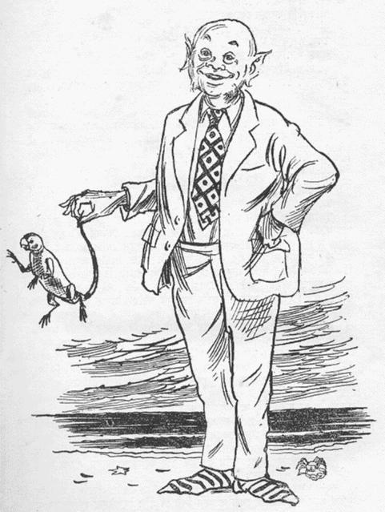

|  |
Mandar Mitra
Professor |
Courses/Teachers
|
Tutorials |
Some research groups |
Colleagues |
Blogs |
Conference proceedings |
Software resources |
Datasets |
Misc. links |
Some files / presentations related to GNU/Linux, Latex, etc.. Feedback welcome.
MERRIAM-WEBSTER (adapted from B.L. Narayan's Launcher)
CAMBRIDGE ONLINE DICTIONARIES (adapted from B.L. Narayan's Launcher)
Enter one word that you wish to search for in the box below. For example, to search for the idiom cap in hand, type either cap or hand.
Last modified: Thu Mar 28 16:59:08 IST 2024